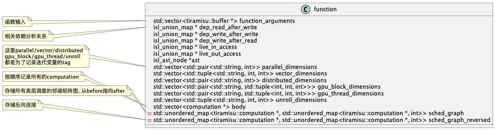

Tiramisu Compiler Internals
Tiramisu 是一个基于polyhedral的DL compiler, 通过探索他的实现细节来学习如何利用polyhedral compilation并整合到他的dsl中的.
概览
Tiramisu compiler的创新点如下： 1. 引入polyhedral compiler,可以控制数据通信,同步,内存级别映射. 2. 将IR分离为四个层级,简化调度语言,增加了对于不同架构的调用可移植性 3. 支持rnn等算子优化,支持多核系统优化,同时优化后性能基本不弱于纯手写
以下是他和其他几个编译器的对比,其中halide是基于表达式进行推导的,好处是支持参数化的tiling,缺点是分析难写,无法支持非常灵活的调度.而Tiramisu则是基于polyhedral,除了不支持参数化tiling其他功能都可以利用polyhedral提供的强大分析来完成.
| Feature | Tiramisu | AlphaZ | PENCIL | Pluto | Halide |
|---|---|---|---|---|---|
| CPU code generation | Yes | Yes | Yes | Yes | Yes |
| GPU code generation | Yes | No | Yes | Yes | Yes |
| Distributed CPU code generation | Yes | No | No | Yes | Yes |
| Distributed GPU code generation | Yes | No | No | No | No |
| Support all affine loop transformations | Yes | Yes | Yes | Yes | No |
| Commands for loop transformations | Yes | Yes | No | No | Yes |
| Commands for optimizing data accesses | Yes | Yes | No | No | Yes |
| Commands for communication | Yes | No | No | No | No |
| Commands for memory hierarchies | Yes | No | No | No | Limited |
| Expressing cyclic data-flow graphs | Yes | Yes | Yes | Yes | No |
| Non-rectangular iteration spaces | Yes | Yes | Yes | Yes | Limited |
| Exact dependence analysis | Yes | Yes | Yes | Yes | No |
| Compile-time set emptiness check | Yes | Yes | Yes | Yes | No |
| Implement parametric tiling | No | Yes | No | No | Yes |
我在带宽受限下的DSA后端优化中就是实现了一套参数化tiling的机制来进行自动fusion和tiling.
Tiramisu Schedule Commands
假设C和P为computation,b为buffer,i/j为迭代变量.来说明一些调度命令：
- 循环变化
| Command | Description |
|---|---|
| C.tile(i,j,t1,t2, i0,j0,i1,j1) | 使用t1 × t2来tile C的循环 (i, j) ,其中i0为最外层循环,j1为最内侧循环 |
| C.interchange(i, j) | 交换C的循环 i ,j |
| C.shift(i, s) | 偏移循环i ｜ |
| C.split(i, s, i0, i1) | 循环分块 |
| P.compute_at(C, j) | 定义计算发生的位置,不合理的调度可能会引起冗余计算. |
| C.unroll(i, v) | 根据参数v展开循环i |
| C.after(B, i) | 指定循环i中C发生在B之后 |
| C.inline() | inline C到他所有的消费者处 |
| C.set_schedule() | 直接通过isl语法指定C的 affine 关系（可以表示layer I和II） |
- 硬件映射
| Command | Description |
|---|---|
| C.parallelize(i) | 在共享内存的系统中并行化执行循环i |
| C.vectorize(i, v) | 通过vector size v向量化循环i |
| C.gpu(i0, i1, i2, i3) | 标记循环i0, i1, i2, i3 在GPU上执行 |
| C.tile_gpu(i0,i1,t1,t2) | Tile 循环 i0 and i1 并映射到 GPU. |
| C.distribute(i) | 在分布式内存系统上并行话循环i. |
- 高层数据操作
| Command | Description |
|---|---|
| C.store_in(b,{i, j}) | 将computation C(i,j) 输出存在buffer b[i,j]. |
| C.cache_shared_at(P,i) | Cache (copy) C 的buffer 到 shared memory. 从 global 到 shared GPU memory会发生在循环i的P操作中, 这个过程中的数据访问和同步会自动完成. |
| C.cache_local_at(P, i) | 类似上一个但是存储在 local GPU memory. |
| send(d, src, s, q, p) | 构造send操作. d: 迭代位置向量; src: 源buffer; s: size; q: 目标节点; p: 属性 (synchronous, asynchronous, blocking, …). |
| receive(d,dst,s,q,p) | 构造receive操作. |
- 底层数据操作
| Command | Description |
|---|---|
| Buffer b(sizes, type) | 声明 buffer (sizes: buffer维度). |
| b.allocate_at(p, i) | 在循环i的计算P处添加allocate操作 |
| C.buffer() | 返回 C所关联的buffer. |
| b.set_size(sizes) | 设定buffer的维度 |
| b.tag_gpu_global() | 设定buffer位于global GPU memory. |
| b.tag_gpu_shared() | 设定buffer位于shared GPU memory. |
| b.tag_gpu_local() | 设定buffer位于local GPU memory. |
| b.tag_gpu_constant() | 设定buffer位于constant GPU memory. |
| C.host_to_device() | copy C.buffer() 从 host 到 device. |
| C.device_to_host() | copy C.buffer() 从 device 到 host. |
| copy_at(p, i, bs, bd) | 在循环i的操作P中copy bs 到 bd .可以在 global, shared and local中进行. |
- 同步操作
| Command | Description |
|---|---|
| barrier_at(p,i) | 在循环i的操作p处构造屏障 |
Tiramisu Multi-Layer IR
当前大多数IR都使用内存在程序语句之间进行通信. 这会在程序中创建基于内存的依赖关系,并迫使编译器在决定优化并映射到硬件之前选择数据布局. 为不同的硬件体系结构优化程序通常需要修改数据布局并消除基于内存的依赖关系,因为它们限制了优化. 因此,必须撤消在调度之前指定的任何数据布局,以允许更多的调度自由度,并且必须调整代码以使用最适合目标硬件的数据列表. 应用这些数据变换并消除基于内存的依赖性很具有挑战性.
举个例子, 将buffer传输到GPU上的shared和local memory. 需要复制到shared memory以及何时执行同步的数据量都取决于代码的优化方式(例如, 代码是否具有两级tile). 同样的适用于决定生成分布式代码时要发送或接收的数据量. 因此, buffer传输到内存层次结构以及通信管理和同步不应在调度之前决定.
Tiramisu通过使用架构无关算法、循环变换、数据布局、通信等完全分开的多层IR来解决代码生成中的这些复杂问题. 1. 第一层表示使用无存储位置的生产者-消费者关系描述了纯算法. 2. 第二层指定计算顺序, 以及处理器计算每个值的计算顺序, 该层适合执行大量优化, 而无需处理具体的内存布局. 3. 第三层指定在消耗中间数据之前存储中间数据的位置. 4. 第四层添加了所有必要的通信和同步操作.
分层的设计决定了应用优化的特定顺序, 并确保编译器在给定层中通过不必担心修改或撤消早期层中做出的决策. 例如, 指定计算顺序及其发生的阶段可以安全地假设不需要数据划分转换. 这个简单的假设使Tiramisu无需考虑调度是否会影响数据布局.

通过下面一段简单的例子来说明每层IR内部的表示形式:
import tiramisu as tm
tm.init("test")
N = 100
M = 200
C = 3
input = tm.input("input", ["i", "j", "c"], [N, M, C], tm.primitive_t.p_float32)
i, j, c = tm.var("i", 0, N - 2), tm.var('j', 0, M - 2), tm.var('c', 0, 3)
d = tm.expr(3).cast(tm.primitive_t.p_float32)
bx = tm.computation('bx', [i, j, c], (input[i, j, c] + input[i, j + 1, c] + input[i, j + 2, c]) / d)
by = tm.computation('by', [i, j, c], (bx[i, j, c] + bx[i + 1, j, c] + bx[i + 2, j, c]) / d)tiramisu内部使用presubger set来表示.
- 第一层: 算法抽象
直接通过简单的表达式之间的生产消费关系来定义,比如by的表示为:
\[ \begin{align} {by(i, j, c) : 0 ≤ i < N − 2 ∧ 0 ≤ j < M − 2 ∧ 0 ≤ c < 3} : \\ (bx(i, j, c) + bx(i + 1, j, c) + bx(i + 2, j, c))/3 \end{align} \]
其中第一部分指定计算的迭代域,第二部分为计算的表达式. 第一部分声明了i,j,c的循环顺序,但是循环的执行顺序却并没有指定.
- 第二层: 计算管理
定义计算的顺序以及处理器编号等. 这里不指定中间变量如何存储在内存中, 这样执行优化操作的就不需要考虑如何去修改内存布局. 从第一层转到第二层只需要使用调度指令即可:
by.gpu_tile(i, j, 32, 32, i0, j0, i1, j1)
bx.compute_at(by, j0)
bx.cache_shared(by, j0)调度后内部的IR表示如下: \[ \begin{align} { by(1, i0(gpuB), j0(gpuB), i1(gpuT ), j1(gpuT), c) : \\ i0 = floor(i/32)∧j0 = floor(j/32)∧i1 = i\%32∧j1 = j\%32∧0 ≤ i < N −2∧0 ≤ j < M −2∧0 ≤ c < 3} : \\ (bx(i0*32+i1,j0*32+j1,c)+ bx(i0*32+i1+1, j0*32+j1, c)+bx(i0*32+i1+2, j0*32+j1, c))/3 \end{align} \]
此时这一层中的Computations被排序以及分配到特定的处理器. 排序可以被分为时间维度和空间维度, 其中时间维度指的是当前计算相对于其他计算的执行顺序,是通过一个词典序的set来表示的; 空间维度指的是计算发生在哪一个处理器, 同时处理器位置则是通过tag表示(目前支持cpu,node,gpuB,gpuT).
- 第三层: 数据管理
这一层通过指定中间变量如何存储来确定数据布局. 任何必要的buffer分配和释放都在这个级别构造, 转换到本层也是通过使用数据调度命令自动转换, 本层还可以指定数据存储的内存层级位置.
本层表示由第二层的IR组成, 添加buffer申请/释放语句, 以及对数组读写的access relation(其中标量也被看作单元素数组). 对于每个buffer,需要指定他们申请的大小和类型.
有时候数据映射可以很复杂,比如存储的时候减少循环的维度,或者可以展平, 这个时候我们也只需要提供复杂的映射函数即可, 比如将计算c(i, j)映射到c(i%2, j%2)或者c(j, i)上.
比如指定bx,by的数据布局:
bx.store_in({c, i, j})
by.store_in({c, i, j})可以得到如下的affine relation表示:
\[ \begin{align} {by(1, i0(gpuB), j0(gpuB), i1(gpuT ), j1(gpuT ), c) \rightarrow by[c, i0 * 32 + i1,j0*32+j1] :\\ i0 = floor(i/32)∧j0 = floor(j/32)∧i1 = i\%32∧j1 = j\%32 ∧ 0 ≤ i < N − 2 ∧ 0 ≤ j < M − 2 ∧ 0 ≤ c < 3} \end{align} \]
- 第四层: 通信管理
这一层添加同步/通信操作到IR中, 并将这些操作映射到时间顺序维度, 并且在buffer分配和释放的时候实例化. 这一层也是通过调度命令来进行转换的.
实现细节
tiramisu的具体实现大体是依照上述框架, 但是还是有需要细节值得好好学习.
数据结构
expr的数据结构和halide类似, 主要用于表示每个statement中的运算表达式. 可以用于表示常量, 变量, 通信/运算/调用操作.

内部执行流程
1. 定义输入
下面就通过python执行和内部的log进行分析. 首先我们定义一个input:
N = 100
M = 200
C = 3
input = tm.input("input", ["i", "j", "c"], [N, M, C], tm.primitive_t.p_float32)在上面一节的数据结构定义input是继承自computation, 因此所调用的构造函数还是computation. 给到computation的迭代变量即为自动构造的i,j,c, 将三个迭代变量构造出对应的迭代域{input[i, j, c] : 0<=i<100 and 0<=j<200 and 0<=c<3}.
然后有一个gen_identity_schedule_for_iteration_domain将原始的迭代域进行扩展为{ input[i, j, c] -> input[0, 0, i' = i, 0, j' = j, 0, c' = c, 0] : 0 <= i <= 99 and 0 <= j <= 199 and 0 <= c <= 2 }的形式, 并赋值到computation的schedule.
其实就是2d+1的执行顺序表示, 其中对应关系如下:
* Loop level : -1 0 1 2
* Schedule dimension number: 0, 1 2 3 4 5 6 7
* Schedule: [0, 0, i1, 0, i2, 0, i3, 0]而后设定当前computation的表达式, 因为是输入, 因此表达式为空.
接下来再构造出unique的名字代替原来的变量名, 以避免用户起的变量名出现冲突的情况, 然后修改schedule的维度名字为:{ input[t1, t2, t3] -> input[0, 0, i = t1, 0, j = t2, 0, c = t3, 0] : 0 <= t1 <= 99 and 0 <= t2 <= 199 and 0 <= t3 <= 2 }
最后是检测到当前 computation具备有效的边界值, 自动构造了buffer,并将当前computationstore_in到这个buffer中.
2. 定义计算
i, j, c = tm.var("i", 0, N - 2), tm.var('j', 0, M - 2), tm.var('c', 0, 3)
d = tm.expr(3).cast(tm.primitive_t.p_float32)
bx = tm.computation('bx', [i, j, c], (input[i, j, c] + input[i, j + 1, c] + input[i, j + 2, c]) / d)
by = tm.computation('by', [i, j, c], (bx[i, j, c] + bx[i + 1, j, c] + bx[i + 2, j, c]) / d)]定义bx和by也是类似同上的逻辑, 不过这里因为存在了表达式, 所以多了一步递归的将表达式转换为非仿射的访问关系.
3. 调度计算
tiramisu的调度都被记录在function中, function更像是所有computation的聚合. 与halide不同, 这里一份代码中只有一个全局function, 许多调度默认操作这个全局变量.

接下来我们看一下function是如何记录调度操作:
- after
bx.after(by, j)首先是找到迭代变量j所对应的循环层级为1, 然后在sched_graph添加by指向bx的连接, 同时将循环层级设置为1.
[src/tiramisu_core.cpp:2354 after]
| [src/tiramisu_core.cpp:2728 get_loop_level_numbers_from_dimension_names]
| | Searching for the dimension j
| | Searching in the range of { bx[t5, t6, t7] -> bx[0, 0, i = t5, 0, j = t6, 0, c = t7, 0] : 0 <= t5 <= 97 and 0 <= t6 <= 197 and 0 <= t7 <= 2 }
| | Corresponding loop level is 1
| | Checking the validity of loop level 1
| The loop level that corresponds to j is 1
| [src/tiramisu_core.cpp:2374 after]
| | Scheduling bx to be executed after by at level 1
| | sched_graph[by, bx] = 1- interchange
bx.interchange(i, j)交互循环, 对于基于isl的ir来说非常简单. 首先获取两个迭代变量所对应的循环层级,然后构造一个transformation map, 然后对computation的schedule进行apply range即可完成变换. 具体的细节如下:
- shift
bx.shift(i, 10)同样也是找到对应的循环维度然后对实施变换即可.
- split
i0, i1 = tm.var(tm.primitive_t.p_int32, "i0"), tm.var(tm.primitive_t.p_int32, "i1")
bx.split(i, 16, i0, i1)获取循环维度后同样构造Transformation map, 首先是通过当前参数构造Origin Transformation map的字符串{bx[t15,t16,t17,t18,t19,t20,t21,t22] -> bx[t15,t16,t12, t13, t14,t18,t19,t20,t21,t22] : t15 = 0 and t12 = floor(t17/16) and t14 = (t17%16) and t13 = 0}, 然后使用isl自动构造出优化后的Transformation map :{ bx[t15 = 0, t16, t17, t18, t19, t20, t21, t22] -> bx[t15' = 0, t16' = t16, t12, t13 = 0, t14, t18' = t18, t19' = t19, t20' = t20, t21' = t21, t22' = t22] : (-t17 + t14) mod 16 = 0 and -15 + t17 <= 16t12 <= t17 and 0 <= t14 <= 15 }, 再应用变换到schedule, 最后再把变换后的schedule中维度的名字进行修改.
- unroll/vectorize/parallelize/distribute
作者为了通用化起见,其实这这些调度都走了同一的逻辑, 都是按一定约束系数分离出原始的计算,然后把循环变量保存到对应的列表中. 这里就以unroll为例子(按作者的代码实现看,他在论文中应该把unroll的调度放到IR的第二层才对):
bx.unroll(c, 3)首先拿到循环维度, 然后通过separateAndSplit函数检查当前unroll的大小是否可以保证被split. 如果可以被split, 循环维度将扩展两个, 否则只扩展一个. 在separateAndSplit函数中, 生成time_space_domain, 也就是获得实际执行的order, 然后获取maximal_AST_depth为后续使用. 再收集当前循环维度的上下界, 这里收集到的上下界分别是2和0, 总次数即(2-0+1). 接下来就可以调用separate函数, 将原始的computation分离两部分, 一部分是i < v * floor(loop_bound/v)另一部分为i >= v * floor(loop_bound/v), 称前面部分为full computation后面为separated computation. 在这个例子中,separated computation为空, 因此并不会添加新的computation, 但是之前所构造的约束还是要通过add_schedule_constraint函数添加到原始的computation中. 后续的的split_with_lower_bound也因为没有分离所以并没有实际的操作.
中间有一步tag_unroll_level就是将当前循环变量保存到对应的列表中, 同样vectorize/parallelize/distribute则是保存到不同的列表中.
- gpu_tile
i0, j0, i1, j1 = tm.var(tm.primitive_t.p_int32, "i0"), tm.var(tm.primitive_t.p_int32, "j0"), tm.var(
tm.primitive_t.p_int32, "i1"), tm.var(tm.primitive_t.p_int32, "j1")
by.gpu_tile(i, j, 32, 32, i0, j0, i1, j1)看代码实现上, 其实gpu tile就是调用两次split并交换循环维度, 然后将循环维度分别映射到block/thread上, 我理解这个scheudle应该也是可以放到IR的第一层中.
- compute_at
这个调度我是在gpu tile之后继续进行的, 因为在不同的循环层级去计算, 需要考虑数据依赖等问题, 所以这个调度实现就比较复杂.
bx.compute_at(by, j0)compute_at函数假设by作为消费者消费由bx(生产者)产生的值. 根据消费者的每个唯一值按需计算此computation, 此时by消费的值在bx中的循环维度计算, 并与消费者处于同一循环嵌套中. 如果消费者by需要冗余计算, 则调度会创建必要的冗余计算并在消费者之前对其进行调度.
此函数会执行: - 按需在消费者之前调度此计算的执行 - 如果需要冗余计算此计算,则创建冗余计算
此函数不执行: - 不为此计算创建任何数据映射. 用户需要为此计算提供访问关系, 就像对任何其他正常计算所做的那样. - 不为此计算分配任何缓冲区. 用户需要声明一个缓冲区以存储此计算的结果.
如果此函数创建了计算的副本,则用户不需要设置其访问关系, 复制的计算将自动具有与原始计算相同的访问关系.此函数不返回用于操作副本计算的句柄, 它不允许用户自由操作副本. 副本将自动安排在消费者之前执行.
下面开始正式的调度流程:
- 通过compute_needed_and_produced计算producer(即this)和consumer之间的needed关系,也就是consumer需要读取producer的哪些数据
- 获取producer_domain, producer_sched以及consumer_domain,consumer_sched
- 根据consumer的expression得到对于producer的访问关系consumer_accesses, 并过滤其中无效的部分得到
{ by[i, j, c] -> bx[i', j' = j, c' = c] : i >= 0 and 0 <= j <= 197 and 0 <= c <= 2 and i <= i' <= 97 and i' <= 2 + i } - 获取producer_domain,consumer_domain到time-processor上, 也就是apply对应的sched.
- 将consumer_accesses也转换到time-processor上, 也就是对consumer_accesses的domain应用producer_sched, 他的range应用consumer_sched
- 对齐上述集合和关系的维度
- 在consumer_domain上应用consumer_accesses, 得到needed, 即为consumer需要读取的producer的数据集合:
[t40, t41] -> { bx[0, 0, i, 0, j, 0, c, 0, t38 = 0, 0, t39 = 0, 0] : t40 >= 0 and 32t40 <= i <= 97 and i <= 33 + 32t40 and j >= 32t41 and 0 <= j <= 197 and j <= 31 + 32t41 and 0 <= c <= 2 and -32 - 32t41 - j <= 32*floor((-1 - j)/32) <= 165 - 32t41 - j } - 返回needed和producer_domain(此时的producer_domain表示是produced数据集合) :
[t40, t41] -> { bx[0, 0, i = t40, 0, j = t41, 0, c, 0, t38 = 0, 0, t39 = 0, 0] : 0 <= t40 <= 97 and 0 <= t41 <= 197 and 0 <= c <= 2 }
- 计算producer本身的迭代域produced
- 计算missing = needed - produced(减号表示difference), 即consumer需要但producer没有produce的部分(这个例子中,missing的区域被分为了两块):
[t40, t41] -> { bx[0, 0, i, 0, j, 0, c, 0, t38 = 0, 0, t39 = 0, 0] : t40 >= 0 and 32t40 <= i <= 97 and i <= 33 + 32t40 and j >= 32t41 and t41 < j <= 197 and j <= 31 + 32t41 and 0 <= c <= 2 and -32 - 32t41 - j <= 32*floor((-1 - j)/32) <= 165 - 32t41 - j; bx[0, 0, i, 0, j = 0, 0, c, 0, t38 = 0, 0, t39 = 0, 0] : t41 = 0 and t40 >= 0 and i >= 32t40 and t40 < i <= 97 and i <= 33 + 32t40 and 0 <= c <= 2 and 32*floor((-1)/1) < 0 } - 如果missing不为空, 那么开始对missing进行操作
- 首先使用
get_shift_degrees对missing计算位移度- 首先遍历missing集合的每个循环层级, 这里是循环1, 对应维度则是2和4.
- 然后将missing集合投影到除当前维度之外的所有维度, 这里的实现是通过
isl_set_project_out删除从[0,dim)和[1,max_dim-1)两个部分,从而获得只有当前维度的投影, 比如投影维度为2则得到:[t40, t41] -> { [i] : t40 >= 0 and 32t40 <= i <= 97 and i <= 33 + 32t40 and ((0 <= t41 <= 6) or (t41 = 0 and i > t40)) } - 对投影后的集合,假设其只剩下当前维度,并且形式为:
[T0]->{[i0]: i0 = T0 + c}且c是常量, 那么-c就是当前维度的移位度(可以理解成shift的offset) - 将当前循环层级的位移度push到列表中
- 循环的将参数替换为existential variables并消除他们.
- 存在变量是代码在程序分析和优化中, 引入新的变量来表示computation中的某个未知变量, 从而可以在不改变原始computation语义的前提下, 进行变换和优化
- 遍历missing的参数遍历, 都加上前缀
p. - 遍历获取missing的每个basic set, 比如当前的basic set:
[t40, t41] -> { bx[0, 0, i, 0, j, 0, c, 0, t38 = 0, 0, t39 = 0, 0, pt40, pt41] : t40 >= 0 and 32t40 <= i <= 97 and i <= 33 + 32t40 and j >= 32t41 and t41 < j <= 197 and j <= 31 + 32t41 and 0 <= c <= 2 and -32 - 32t41 - j <= 32*floor((-1 - j)/32) <= 165 - 32t41 - j }, 其中最后两个维度pt40, pt41就是被新加入前缀的变量. - 遍历basic set每个constraint
- 检查每个constraint是不是有原始参数
[t40,t41]参与. - 如果有参与,比如constraint为
([t40, t41] -> { bx[i0, i1, i, i3, j, i5, c, i7, t38, i9, t39, i11, pt40, pt41] : t40 >= 0 }), 那么修改constraint为中用到的变量为加过前缀的变量:([t40, t41] -> { bx[i0, i1, i, i3, j, i5, c, i7, t38, i9, t39, i11, pt40, pt41] : pt40 >= 0 }) - 将所有constraint合并起来后, project out掉之前修改过的变量维度, 也就是
[pt40, pt41]
- 最终原始missing从
[t40, t41] -> { bx[0, 0, i, 0, j, 0, c, 0, t38 = 0, 0, t39 = 0, 0] : t40 >= 0 and 32t40 <= i <= 97 and i <= 33 + 32t40 and j >= 32t41 and t41 < j <= 197 and j <= 31 + 32t41 and 0 <= c <= 2 and -32 - 32t41 - j <= 32*floor((-1 - j)/32) <= 165 - 32t41 - j; bx[0, 0, i, 0, j = 0, 0, c, 0, t38 = 0, 0, t39 = 0, 0] : t41 = 0 and t40 >= 0 and i >= 32t40 and t40 < i <= 97 and i <= 33 + 32t40 and 0 <= c <= 2 and 32*floor((-1)/1) < 0 }变为了{ bx[0, 0, i, 0, j, 0, c, 0, t38 = 0, 0, t39 = 0, 0] : 0 <= i <= 97 and 0 < j <= 197 and 0 <= c <= 2 and -32 - j - 32*floor((-1 - j)/32) <= 32*floor((j)/32) <= 165 - j - 32*floor((-1 - j)/32); bx[0, 0, i, 0, j = 0, 0, c, 0, t38 = 0, 0, t39 = 0, 0] : 0 < i <= 97 and 0 <= c <= 2 } - 因为现在missing不为空, 那么by作为consumer就需要bx重新计算出missing的值, 所以接下来需要创建duplicated producer
- 将此时的missing作为
range_constraints_set开始duplicate - duplicate就是将复制原始的schedule中的并增加第一个维度, 从
{ bx[t5, t6, t7] -> bx[0, 0, i = t5, 0, j = t6, 0, c = t7, 0, t38 = 0, 0, t39 = 0, 0] : 0 <= t5 <= 97 and 0 <= t6 <= 197 and 0 <= t7 <= 2 }变为了{ bx[t5, t6, t7] -> bx[1, 0, i = t5, 0, j = t6, 0, c = t7, 0, t38 = 0, 0, t39 = 0, 0] : 0 <= t5 <= 97 and t6 >= 0 and -t5 < t6 <= 197 and 0 <= t7 <= 2 } - 然后copy出原始的computation后将新的schedule赋值到新的computation上
- 将此时的missing作为
- 指定duplicated computation -> producer computation -> comsumer computation的执行顺序
- 因为此时duplicated computation中的一些计算是发生在指定循环内部的, 但之前copy过来的计算映射是带有指定循环外部的偏移, 也就是之前计算的
get_shift_degrees, 此时再将偏移补回去
4. 代码生成
这里简单的再添加一下host/device数据复制的操作, 然后进行代码生成. 本来我想使用他论文中提到的gpu的方式进行调度, 但可能由于python包装的一些问题, 导致生成有问题, 因此我就使用cpu的数据搬运操作进行模拟.
N = 100
M = 200
C = 3
input = tm.input("input", ["i", "j", "c"], [N, M, C], tm.primitive_t.p_float32)
i, j, c = tm.var("i", 0, N - 2), tm.var('j', 0, M - 2), tm.var('c', 0, 3)
cp1 = tm.computation('cp1', [i, j, c], input[i, j, c])
d = tm.expr(3).cast(tm.primitive_t.p_float32)
bx = tm.computation('bx', [i, j, c], (cp1[i, j, c] + cp1[i, j + 1, c] + cp1[i, j + 2, c]) / d)
by = tm.computation('by', [i, j, c], (bx[i, j, c] + bx[i + 1, j, c] + bx[i + 2, j, c]) / d)
cp2 = tm.computation('cp2', [i, j, c], by[i, j, c])
by.after(bx, j)
cp1.before(bx, tm.computation.root)
cp2.after(by, tm.computation.root)
inbuf = input.get_buffer() # note lifetime problem
outbuf = cp2.get_buffer()
tm.codegen([inbuf, outbuf], "func.o")这里调度和构造computation的过程就先不看了, 直接开始看codegen部分:
void tiramisu::function::codegen(const std::vector<tiramisu::buffer *> &arguments, const std::string obj_filename, const bool gen_cuda_stmt, bool gen_python)
{
DEBUG_FCT_NAME(3);
this->set_arguments(arguments);
this->lift_dist_comps();
this->gen_time_space_domain();
this->gen_isl_ast();
this->gen_halide_stmt();
this->gen_halide_obj(obj_filename, gen_python);
}这里作者所分割的流程还是比较清楚的, 我们一个个来看.
set_arguments- 将传入的buffers作为function的参数
lift_dist_comps- 列出分布式的相关内容, 这里暂时没使用到
gen_time_space_domain(构建时序空间)gen_ordering_schedules(获取schedule的顺序)dump_sched_graph, 根据此前before/after的调度时添加的连接关系dump出依赖图cp1=[root]=>bx ,bx=[1]=>by, by=[root]=>cp2可以看到是一个比较依赖图, 其中方括号中记录是依赖的循环层级.- 遍历sched graph, 通过调用
after_low_level函数来调整computation的执行顺序.- 首先将所有的computation的schedule进行对齐, 也就是把schedule中的维度个数进行扩展到相同. 比如
{ cp1[t14 = 0] -> cp1[0, 0, t13 = 0, 0] }就被扩展到了{ cp1[t14 = 0] -> cp1[0, 0, t13 = 0, 0, 0, 0, 0, 0] }, 从而匹配bx/by的两级循环. - 接下来修改schedule来实现先后顺序
- 此时bx需要排在cp1之后, 原本的bx为
{ bx[t5, t6, t7] -> bx[0, 0, i = t5, 0, j = t6, 0, c = t7, 0] : 0 <= t5 <= 97 and 0 <= t6 <= 197 and 0 <= t7 <= 2 }, 这里通过增大相同维度词典序(+10)来修改执行顺序,修改后bx为{ bx[t5, t6, t7] -> bx[0, 10, i = t5, 0, j = t6, 0, c = t7, 0] : 0 <= t5 <= 97 and 0 <= t6 <= 197 and 0 <= t7 <= 2 } - bx修改后,修改by, 原本by为
{ by[t9, t10, t11] -> by[0, 0, i = t9, 0, j = t10, 0, c = t11, 0] : 0 <= t9 <= 97 and 0 <= t10 <= 197 and 0 <= t11 <= 2 }, 此时他需要排在bx后面, 那么首先dim 1需要匹配, 同时dim 5需要大于bx因此得到{ by[t9, t10, t11] -> by[0, 10, i = t9, 0, j = t10, 10, c = t11, 0] : 0 <= t9 <= 97 and 0 <= t10 <= 197 and 0 <= t11 <= 2 } - 后续按相同逻辑修改好每个computation的schedule.
- 此时bx需要排在cp1之后, 原本的bx为
- 首先将所有的computation的schedule进行对齐, 也就是把schedule中的维度个数进行扩展到相同. 比如
- 遍历所有的computation, 调用
computation.gen_time_space_domain构建时序空间- 直接对当前computation的iter domain应用它的schedule即可得到time_space_domain并返回
- 比如
{ by[i, j, c] : 0 <= i <= 97 and 0 <= j <= 197 and 0 <= c <= 2 }apply schedule:{ by[t9, t10, t11] -> by[0, 10, i = t9, 0, j = t10, 10, c = t11, 0] : 0 <= t9 <= 97 and 0 <= t10 <= 197 and 0 <= t11 <= 2 }得到:{ by[0, 10, i, 0, j, 10, c, 0] : 0 <= i <= 97 and 0 <= j <= 197 and 0 <= c <= 2 }
gen_isl_ast构造整个function的isl astget_trimmed_time_processor_domain将每个之前schedule中多余的第0维消除掉.get_aligned_identity_schedules获取function内部所有computation的aligned的identity schedule- 也就是将他的schedule的domain取出后进行identity映射, 然后再和
trimmed_time_processor_domain进行求交集, 比如by的schedule为{ by[0, 10, i, 0, j, 10, c, 0] : 0 <= i <= 97 and 0 <= j <= 197 and 0 <= c <= 2 }, 它的identity_schedule为{ by[10, i, 0, j, 10, c, 0] -> [10, i' = i, 0, j' = j, 10, c' = c, 0] : 0 <= i <= 97 and 0 <= j <= 197 and 0 <= c <= 2 }(这里by的第0维在是与trimmed_time_processor_domain求交集消除的)
- 也就是将他的schedule的domain取出后进行identity映射, 然后再和
rename_computations, 避免名字冲突, 需要给computation添加unique name构造
isl_ast_build并设定codegen选项atomic_upper_bound=true(表示生成的循环变量在判断上界时只使用一次)group_coscheduled=true(处理相同位置的两个实例)
为ast build 设定
after_each_for以及at_each_domain的callback.设定迭代器, 这里他并没有从computation中获取循环名, 而是默认为
c0..cn将
aligned_identity_schedules与trimmed_time_processor_domain进行取domain的交集, 得到Identity schedule intersect trimmed Time-Processor domain :{ cp2[20, t16 = 0, 0, t20 = 0, 0, t21 = 0, 0] -> [20, t16' = 0, 0, t20' = 0, 0, t21' = 0, 0]; bx[10, i, 0, j, 0, c, 0] -> [10, i' = i, 0, j' = j, 0, c' = c, 0] : 0 <= i <= 97 and 0 <= j <= 197 and 0 <= c <= 2; cp1[0, t13 = 0, 0, t18 = 0, 0, t19 = 0, 0] -> [0, t13' = 0, 0, t18' = 0, 0, t19' = 0, 0]; by[10, i, 0, j, 10, c, 0] -> [10, i' = i, 0, j' = j, 10, c' = c, 0] : 0 <= i <= 97 and 0 <= j <= 197 and 0 <= c <= 2 }接下来对这个map进行执行
isl_ast_build_node_from_schedule_map, 此时会执行到各个callbackafter_each_for的callback为空at_each_domain的callback为stmt_code_generator- 当前传入的ast node调用
get_computation_by_node, 通过ast node的expr, 获得第一个参数的名字得到computation name, 然后再从function获得对应的computation 的vector filter_computations_by_domain, 获得当前build的schedule map domain, 对上一步获得的computation vector进行过滤- 假设当前build的ast node的domain为:
{ bx[10, i, 0, j, 0, c, 0] : 0 <= i <= 97 and 0 <= j <= 197 and 0 <= c <= 2 }, 当前的computation vector中存在bx. - 遍历computation vector
- 获得当前computation的原始domain为:
{ bx[i, j, c] : 0 <= i <= 97 and 0 <= j <= 197 and 0 <= c <= 2 } - domain apply 之前
trimmed_union_of_schedules得到computation在time space上的domain:{ bx[10, i, 0, j, 0, c, 0] : 0 <= i <= 97 and 0 <= j <= 197 and 0 <= c <= 2 } - 将当前的build node dmoian与time space上的domain取交集, 如果交集不为空, 那么将当前computation选中放到filtered_comp_vec中.
- 获得当前computation的原始domain为:
- 假设当前build的ast node的domain为:
- 遍历filtered_comp_vec
- 以当前computation构造出isl id, 并通过
isl_ast_node_set_annotation将这个id作为node的标记 - 通过
get_access_relation_adapted_to_time_processor_domain来获取access(此时的access是lhs, 也就是写入的buffer的访问)- 获取原始读写buffer的access为:
{ bx[i, j, c] -> _bx_b1[i' = i, j' = j, c' = c] } - 原始的schedule为:
{ bx[t5, t6, t7] -> bx[0, 10, i = t5, 0, j = t6, 0, c = t7, 0] : 0 <= t5 <= 97 and 0 <= t6 <= 197 and 0 <= t7 <= 2 } - trimmed schedule为:
{ bx[t5, t6, t7] -> bx[10, i = t5, 0, j = t6, 0, c = t7, 0] : 0 <= t5 <= 97 and 0 <= t6 <= 197 and 0 <= t7 <= 2 } - 将trimmed schedule对access relation进行apply domain得到access function:
{ bx[10, i, 0, j, 0, c, 0] -> _bx_b1[i' = i, j' = j, c' = c] : 0 <= i <= 97 and 0 <= j <= 197 and 0 <= c <= 2 }
- 获取原始读写buffer的access为:
- 通过
get_rhs_accesses解析得到的access function (这里是读数据的访问)- 获取当前computation的expr, 比如bx原本的表达式为
(input[i, j, c] + input[i, j + 1, c] + input[i, j + 2, c]) / d - 递归执行
traverse_expr_and_extract_accesses将expr中的accesses提取出来- 首先提取到第一个访问的表达式为:
input[i, j, c] - 以当前computation的domain
bx[i, j, c]构建出Transformation map:{ bx[i, j, c] -> input[i', j', c'] } - 遍历domain的dim和range的dim,如果他们的id相同,那么添加等价约束, 得到:
{ bx[i, j, c] -> input[i' = i, j' = j, c' = c] } - 然后依次遍历得到其他两个access relation
{ bx[i, j, c] -> input[i' = i, j' = 1 + j, c' = c] }和{ bx[i, j, c] -> input[i' = i, j' = 2 + j, c' = c] }
- 首先提取到第一个访问的表达式为:
- 获取当前computation的expr, 比如bx原本的表达式为
- 计算iterators map, 假设原来的循环为
c[i0, i1], 由于之前重新生成了迭代变量, 所以需要将他们联系起来, 得到类似{ i0 : c0*10+c2, i1: c1*10+c3>}的字典.- 获取当前computation的iter domian/schedule
- domian进行identity之后再使用schedule apply domain得到新的identity:
{ cp1[0, t13 = 0, 0, t18 = 0, 0, t19 = 0, 0] -> cp1[t13' = 0](此时map的domain的经过对齐的, 而range则是原始的) - 通过
create_isl_ast_index_expression构造取index的isl_ast_expr, 将上一步获取的identity作为access relation传入- 拿到原始schedule:
{ bx[10, i, 0, j, 0, c, 0] -> [t13 = i, t18 = j, t19 = c] : 0 <= i <= 97 and 0 <= j <= 197 and 0 <= c <= 2 }进行reverse得到:{ [t13, t18, t19] -> bx[10, i = t13, 0, j = t18, 0, c = t19, 0] : 0 <= t13 <= 97 and 0 <= t18 <= 197 and 0 <= t19 <= 2 } - 将reversed map转换为pw aff为iterator_map:
{ [t13, t18, t19] -> bx[(10), (t13), (0), (t18), (0), (t19), (0)] : 0 <= t13 <= 97 and 0 <= t18 <= 197 and 0 <= t19 <= 2 } - 将access转换为pw aff为index_aff:
{ bx[i0, i, i2, j, i4, c, i6] -> bx[(i), (j), (c)] : i0 = 10 and i2 = 0 and i4 = 0 and i6 = 0 and 0 <= i <= 97 and 0 <= j <= 197 and 0 <= c <= 2 } - 将两个pw aff的参数进行对齐得到:
{ bx[i0, i, i2, j, i4, c, i6] -> bx[i', j', c'] }和{ [t13, t18, t19] -> bx[o0, i, o2, j, o4, c, o6] } - 然后将两个pw aff进行复合
isl_pw_multi_aff_pullback_pw_multi_aff(index_aff,iterator_map)得到{ [t13, t18, t19] -> bx[(t13), (t18), (t19)] : 0 <= t13 <= 97 and 0 <= t18 <= 197 and 0 <= t19 <= 2 } - 通过
isl_ast_build_access_from_pw_multi_aff取复合后的pw aff的access表达式得到{ op: access, args: [ { id: bx }, { id: c1 }, { id: c3 }, { id: c5 } ] }就是当前computation的index表达式.
- 拿到原始schedule:
- 得到iterators map 为
{ i : { id: c1 }, j : { id: c3 }, c : { id: c5 } }
- 接下来遍历所有的rhs的access, 为每个rhs 的access
create_isl_ast_index_expression:{ op: access, args: [ { id: _input_b0 }, { id: c1 }, { id: c3 }, { id: c5 } ] }{ op: access, args: [ { id: _input_b0 }, { id: c1 }, { op: add, args: [ { id: c3 }, { val: 1 } ] }, { id: c5 } ] }{ op: access, args: [ { id: _input_b0 }, { id: c1 }, { op: add, args: [ { id: c3 }, { val: 2 } ] }, { id: c5 } ] }
- 最终所有的access的index expression为:
_bx_b1[c1][c3][c5], _input_b0[c1][c3][c5], _input_b0[c1][c3 + 1][c5], _input_b0[c1][c3 + 2][c5]
- 以当前computation构造出isl id, 并通过
- 然后将当前computation的iterators map以及index expression都保存起来.
- 当前传入的ast node调用
此时所有的ast node都构造完毕了, 通过isl printer打印最终的ast node为:
{ for (int c1 = 0; c1 <= 97; c1 += 1) for (int c3 = 0; c3 <= 197; c3 += 1) for (int c5 = 0; c5 <= 2; c5 += 1) cp1(0, c1, 0, c3, 0, c5, 0); for (int c1 = 0; c1 <= 97; c1 += 1) for (int c3 = 0; c3 <= 197; c3 += 1) { for (int c5 = 0; c5 <= 2; c5 += 1) bx(10, c1, 0, c3, 0, c5, 0); for (int c5 = 0; c5 <= 2; c5 += 1) by(10, c1, 0, c3, 10, c5, 0); } for (int c1 = 0; c1 <= 97; c1 += 1) for (int c3 = 0; c3 <= 197; c3 += 1) for (int c5 = 0; c5 <= 2; c5 += 1) cp2(20, c1, 0, c3, 0, c5, 0); }
gen_halide_stmt, 将isl ast lower到halide的stmt上从而利用halide所提供的codegen功能- 调用
halide_stmt_from_isl_node函数递归的将isl ast转换为halide stmt, 对于stmt来说主要有以下一些ast类型for,if,block - 对于表达式则是通过之前所构造的isl ast node中所添加的annotation找到对应的computation, 然后通过computation构造出具体的halide expression.
- 调用
总结
其实对于isl来说, 只需要有access relation, iteration domain以及schedule就可以构造出对应的ast, 但是还缺少每个statement中具体的表达式才能得到完整的程序. tiramisu是在computation的抽象中存放了isl所需要内容以及表达式, 也将两者进行了联系, 对computation的调度即是修改isl的schedule和iteration domain, 最终利用调度和关系生产ast, 通过表达式与ast的联系生成halide IR.